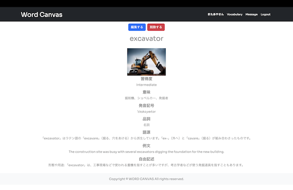
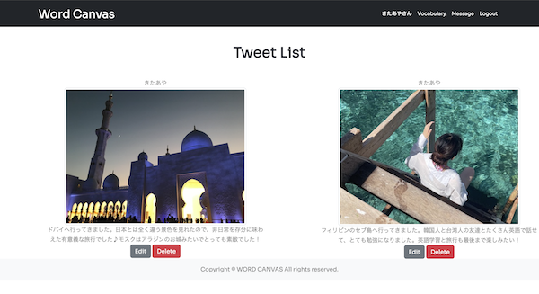

wordcanvas（英単語帳・趣味共有SNS）


開発環境
Ruby / Ruby on Rails / MySQL / GitHub / JavaScript / Visual Studio Code / Bootstrap
-
概要
制作時間 70時間 URL https://wordcanvas.onrender.com/ ID 無し PASS 無し -
動作テスト
テスト用アカウント
mail test@test PASS test123
OUTLINEアプリケーションの概要
オリジナルアプリケーションとして、英単語帳アプリを作成しました。
英単語を習得度毎に一覧表示ができるので、どの単語を優先的に会話に用いてアウトプットしていくのかがわかりやすくなっています。
トップページにアクセスすると、様々な趣味のジャンルについて表示されています。それをクリックすると、そのジャンルにおけるタイムライン機能を閲覧することができます。
学習した単語は編集画面で学習中→単語を見れば意味がわかる→会話に用いることができるなど習得度を変更することができるので、学習中の英単語を積極的に意識して学習することができます。
トップページではインスタグラムのような写真を投稿できる機能もあり、友人などの海外旅行などの投稿も見ることができます。
-
開発に至った経緯
海外留学の経験から、街中で見つけた新しい単語をメモしても、どこにメモしたか忘れてしまったり、覚えても会話で使う頻度が低くなると忘れてしまったりした経験から、素早くメモができる英単語帳が欲しいと思い作成に至りました。
英単語を日本語ではなく、イメージで覚えていく方が記憶に残りやすいと感じ、単語のイメージ画像を添付できるようにしました。
また、学習のモチベーションが下がらないように、同じく英語学習者の投稿などを見て、学習意欲が下がらないように写真投稿ページを作成しました。
-
開発で工夫したこと
英単語の登録画面では英単語の習得度毎に一覧表示ができるようにし、覚えたばかりの英単語を中心に学習できるようにしました。
実際の英会話レッスンでも使用し、友人からは「英単語を一つに集約できるのが嬉しい」「どの単語を中心にアウトプットしたら良いかわかりやすい」と評価を頂けました。
このように実際に利用してもらい、ユーザーヒアリングを行いながら改善を行っています。
-
今後実装したいと思っていること
まずは基本機能をしっかりと実装し(現在トップページの写真が表示できなくなっている)
その他、SNSでは友人とのフォロー機能やタグ付け機能を実装し、コミュニケーションツールを作成したいと考えています。